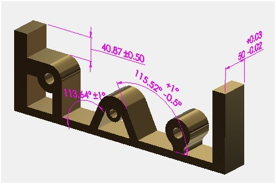

このルールは、パーツおよびアセンブリレベルで指定された公差のうち、指定値よりも厳しい（きつい）公差を識別します。
DFMPro は、これらの公差を緩和すべきだと提案するものではありません。追加の解析が必要な厳しい公差を識別するだけです。
機能設計に重点を置く初心者の設計者が、必要以上に厳しい公差を指定してしまうことは一般的です。これらの公差は、製造コストの増加や、量産時の不良（リジェクト）発生確率の増加につながることがよくあります。
一般に、公差は必要以上に厳しくすべきではなく、利用可能な工作機械の自然な工程能力（プロセスキャパビリティ）の範囲内であるべきです。
直線公差および角度公差ゾーンの推奨値を指定します。

注記:
公差が割り当てられているパーツファイルのみが識別され、解析されます。
CAD モデルで与えられている公差は、eDrawings レポートでは表示されません。